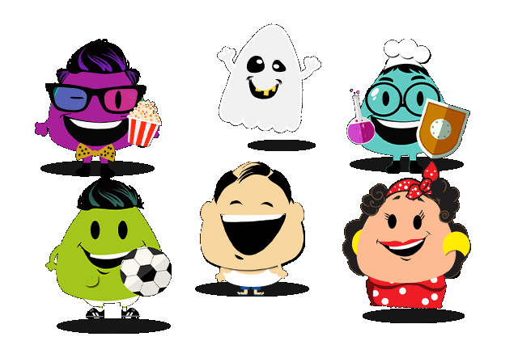

<ion-header align-title="center" class="select-mode-header">
  <ion-toolbar>
    <ion-buttons (click)="goBack()" slot="start">
        <ion-icon name="arrow-back" size="30"></ion-icon>
    </ion-buttons>
    <ion-title>{{'BUTTONS.homeـbuttonـnew_game' | translate}}</ion-title>
  </ion-toolbar>
</ion-header>
<ion-content class="select-mode-content">
  <div class="top-wrapper padding-top">
    <button (click)="goToSpinWheel()" class="button button-violet button-common-80">{{'BUTTONS.game_friends_empty_random'| translate}}</button>
    <button
      class="button button-common-80 icon-left ion-social-facebook login-button">{{ 'BUTTONS.facebook_play_with_friends' | translate }}</button>
    
  </div>
</ion-content>